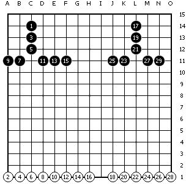

五连与活四棋形同时形成的判断
#1 五连与活四棋形同时形成的判断作者：心上人 发表时间：2010-5-23 8:38:59
在提出我的论点之前，先来做两个棋形的判断，见下图：1、3、5和17、19、21是否是活三？我来演示一下我的推理过程。

1、首先，要找一个推理的依据
《2009年版中国五子棋竞赛规则》，这个是依据。无尽在157楼说了推理的方法，这个方法就是来自这个规则。我可以简单的重复一下。要判断一个三是否是活三：
（1）要先看棋形，就是说只看这个三，不要看其它子，它本身要具备活三的条件，能够形成活四，比如连活三可以在某个点形成活四等。
（2）自身的棋形判断结束，下一步就要考虑其它棋形对它的活四点的影响，这一步可以称之为胜负判断，比如说：
a、落子这个活四点的同时又形成了另外一个四，那么这个原本的活三就变成了假活三，这个可以说由于四四禁手导致活三失效（就是无法变活四）；
b、落子这个活四点的同时又形成了长连，那么这个活三也变成了假活三，这个可以说由于长连禁手，导致活四失效（也是无法变活四）；
c、落子这个活四点的同时又形成了一个活三，这个称之为四三，这样的话，原先的活三有效，也就是说新形成的活四并没有失效。
2、有了这个推理依据，我们先来判断左图。
（1）先看棋形，可以在C11形成活四，这个应该没有疑问，棋形是一个活三的形状。
（2）做胜负判断，看其它棋形的影响，很伤心，落子C11同时形成了长连，由此做出判断，此活四失效，所以活三变成了假活三，判断结束。1、3、5不是活三。
3、我们先不着急分析右图，先来分析左图，落子C11活四失效的原因。
首先要引进“有效”这个概念，活三可以变成活四，称之为“活三有效”；活四可以变成五连，称之为“活四有效”，如果不能形成，我们就称之为“失效”。
其次，就需要思考：为什么落子C11，导致了活四的失效？这个有不同的观点：
（1）我的观点：由于落子C11形成了长连，导致了棋局结束，此时形成的活四，无法形成五连而失效。
（2）无尽的观点：由于C11无法落子，导致这个活三无法形成活四而失效。
我不知道大家如何来理解这两个观点，我个人的理解这两个观点是等同的。我如果问无尽，C11是无法落子，但如果我就是在C11落子了会怎么样？无尽一定会以我（1）中的观点来解释，从这个层面，我们两个人的观点并无矛盾。
4、如果3成立，那么我再强调一下3的结论：长连形成禁手导致棋局结束，从而导致活四失效。
那么，我可不可以由此推出，只要棋局结束，就可以使同时形成的这个活四失效（不再能形成五连）呢？这个推论在逻辑是否存在问题？
我认为是可以的。四与三同时形成，四是有效（可以形成五连）的，三也是有效（可以形成活四）的，因为四三没有导致棋局的结束；四与四同时形成，两个四均失效（不再能形成五连），因为棋局结束了。
Ok，我的逻辑就在于此。当然，我并不会固执己见于自己的这个逻辑，我希望能听到大家对这个逻辑的合理性进行评论，我也希望能建立一个合理的逻辑，如果大家有更好的逻辑，我完全可以抛弃掉这个。
5、五连与禁手
我为什么先举了一个禁手的例子，因为禁手相关的理论大家都能接受。比如，左图，是假活三，一目了然，不必多费口舌。
而五连是否可以与禁手相提并论，我认为也是可以的。五连与禁手说的都是棋形是没错，但更重要的是，规则赋予了它俩跟神圣的任务：就是胜负的判断。不管你是走出五连，还是走出禁手，从理论的层面，棋局都已经结束。
在4中的逻辑，棋局结束，可以导致活四失效，如此，五连导致活四失效，也在情理之中。
6、我们来判断右图。
落子L11，形成活四的同时，形成了五连，五连导致了棋局结束，活四失效。17、19、21是假活三。判断结束。
7、在此基础上的推论：
（1）推论1：从有效性来说：五连>禁手>活四等（所有不使棋局结束的棋形）
（2）推论2：禁手与其它棋形（五连除外）同时形成，只算禁手，不算其它。
（3）推论3：五连与其它棋形同时形成，只算五连不算其它。
推理结束，欢迎各位/*760*90，创建于2012-2-9*/ var cpro_id = 'u761865';
#2 Re:五连与活四棋形同时形成的判断作者：飞哥 发表时间：2010-5-23 12:55:24
很多人都不愿发表什么观点，因为他们都不想陷入不休止的争论当中。。。